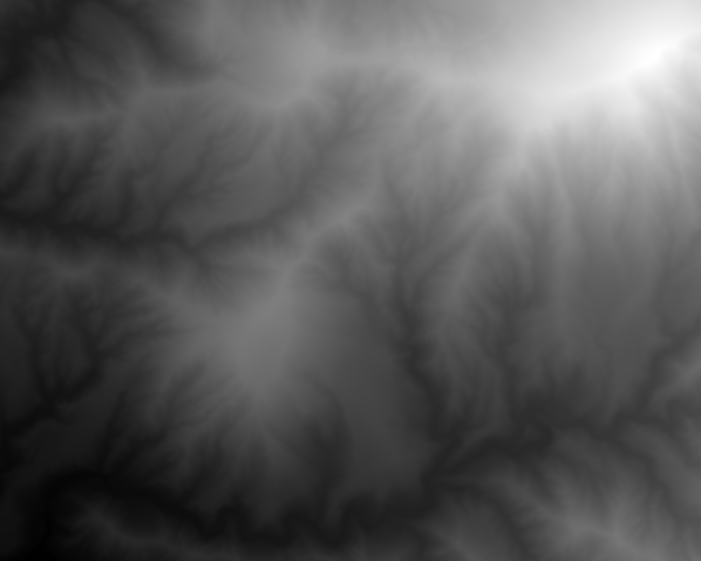
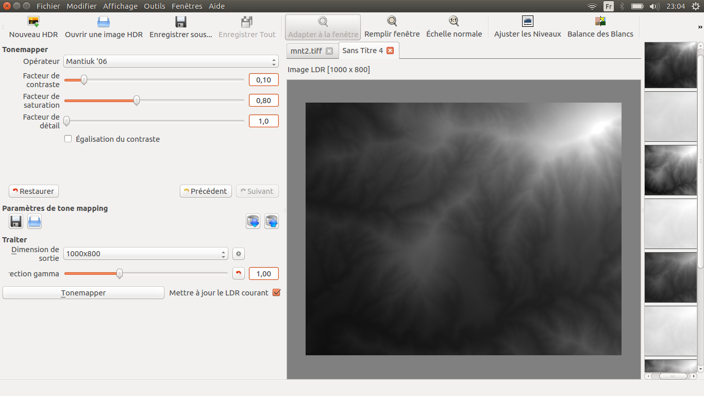
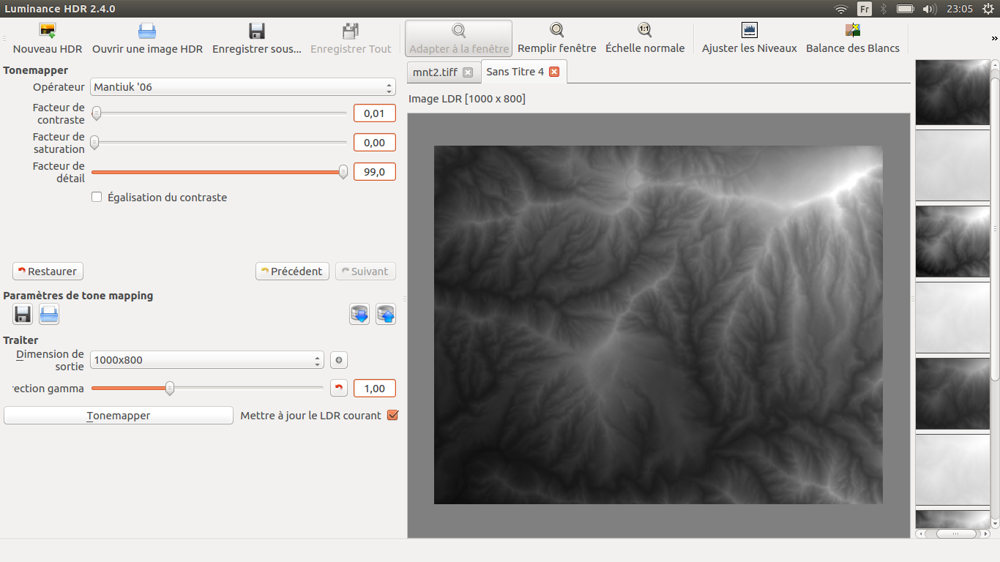
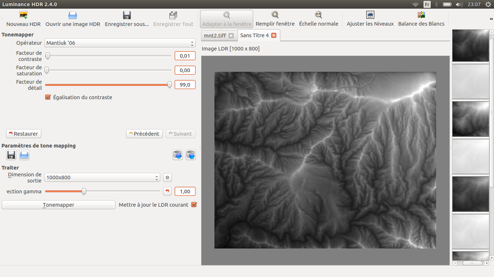
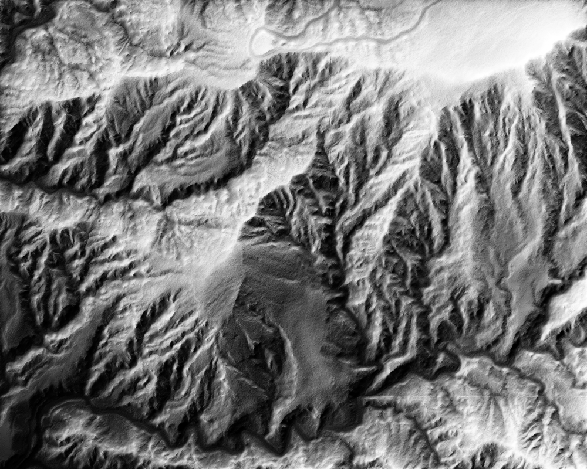
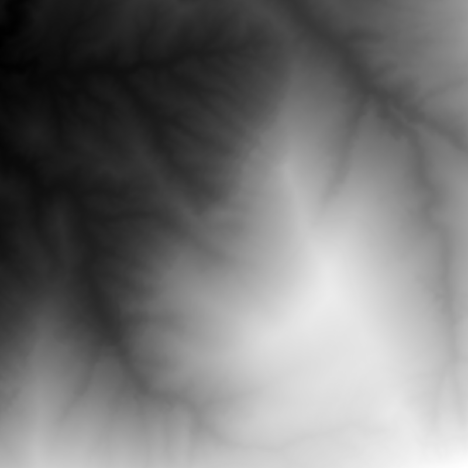
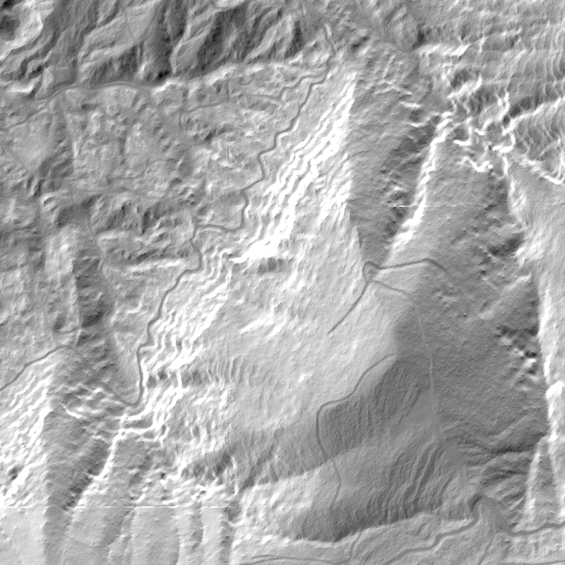
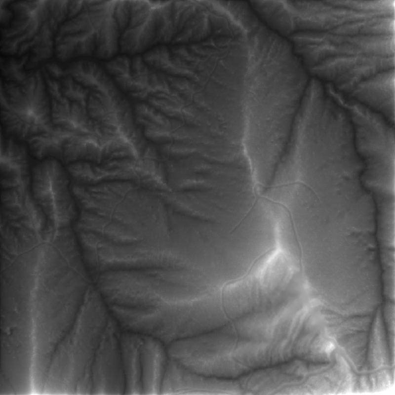
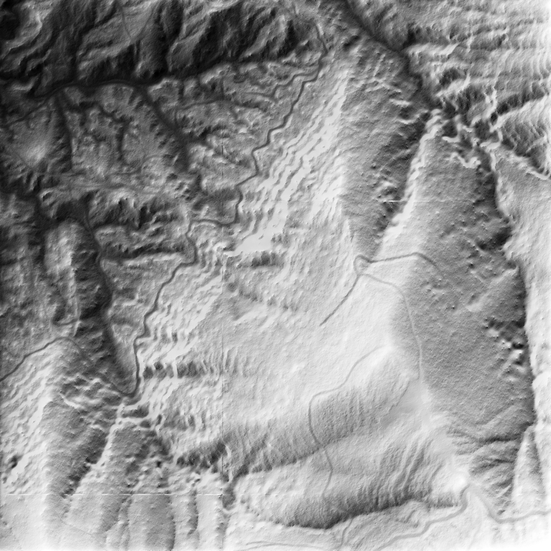

======================================
~ INTRODUCTION ~
Good evening everyone. I wasn't sure if the "Tool Game" was effective today (the Monday after Easter is usually considered as a day off in France).
The first tool that came to my mind (after the software The GIMP of course) was Luminance HDR: a software with a GUI (but also with a CLI available for the ones who need it) that is supposed to create HDR images but propose some tone-mapping methods to render these images in an attractive way:
••• Luminance HDR (Main page) •••
••• Luminance HDR (Wikipedia) •••
••• HDR Imaging (Wikipedia) •••
======================================
~ (1°) CREATING AN HDRI ~
Yesterday night, I took 10 pictures of my (messy) desk, without any tripod. As you may guess, these images are not at all aligned (weighted means):

Hopefully, there is a tool (based on Hugin) included in Luminance HDR which allows you to align the images in a decent way (weighted means):

⚠ ⚠ ⚠ PROBLEM ⚠ ⚠ ⚠
I didn't managed to create an HDRI after testing all the possible parameters combinations. 🙁
So I might try creating an HDRI using a homemade recipe...
... Yet not sure I would be able to cook code it in a decent time.
======================================
~ (2°) TONE-MAPPING AN HDRI ~
TODO: Managing to obtain an HDRI, then showing some tone-mapping results
======================================
~ (3°) RELIEF SHADING 😉 ~
Well, as you may guess, using a tool in a conventional way is not very "funny". So let's try something interesting. Most of you had to manipulate Digital Terrain Model (DTM) like this one for exemple:
One of the most common way to vizualize a DTM is by simulating a top left light source in order to create some shadows. They are many ways to perform it, one of the easiest way is by combinating the X ant Y gradients of the DTM, like this:

Yet, one would like to add more complexe shading effects un order to simulate some physics (like ambiant occlusion for example). Luminance HDR does NOT do that... but we can always test some stuffs, like the Mantiuk'06 tone mapping:


After merging the shaded (left) and the tone-mapped (right) DTM we could obtain some interesting result (bottom) showing some "new" DTM structures:


Here is another example:



Of course, it isn't as pretty as "real" ambiant occlusion:

I hope you enjoyed this little idea of using tone mapping for a purpose it wasn't designed for... Don't hesitate to contact me if you have questions, ideas or any kind of comments.
======================================